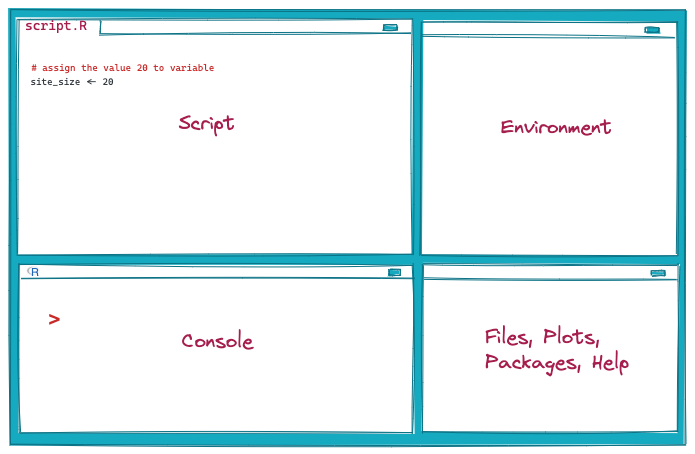

2 + 2 # addition[1] 44 - 2 # minus[1] 22 * 2 # multiplication[1] 44^2 # 4 * 4 power function[1] 16sqrt(16) # the square root of 16[1] 4round(7.237, 2) # round number to second decimal places[1] 7.24Lesson 0
learn about R and RStudio
set up R project
get started
This lesson is designed as a crash course to get you started with R and RStudio right away. At the end of the lesson you should have basic knowledge of R language and R project ready for further analysis.
R software is an interpreter installed in machine that allows you computer to understand and run the R code.
Find R installation on your computer and open the R console. You could a default prompt > where R is expecting an input. Try typing 2 + 2 and press Enter. Now type 6 - 2 and press Enter again. Now you can use keyboard up and down arrows to browse between the commands you just typed in and execute them again.
R language is an open source statistical programming language designed to write code (instructions) that are executed (run) by computer. You will learn R language syntax to be able to write these instructions line by line in a script.
R got his name after developers Ross Ihaka and Robert Gentleman of the Department of Statistics at the University of Auckland.
R was inspired by an earlier S language for statistics developed at Bell Laboratories (formerly AT&T, now Lucent Technologies)
for more background information visit this link.
RStudio is an IDE (Integrated Development Software), a software designed to write and execute code and interact with R language.
R and RStudio is free and easy to install. Make sure you have installed most recent version - R 4.2.0 or latest.
There are many online resources that guide through the process:
Install R first then RStudio.
Let’s open RStudio on your computer.

RStudio Graphical User Interface (GUI) consists of four panes.
Each pane have number of tabs that allow you to switch between different information.
The content of the windows is as follows:
bottom - left - console is used to enter and execute R commands (press enter after your code). It will also print results from script pane
top-left - this window is used as text editor for writing R code in script files.
In order to open the pan go to File > New File > R Script
top-right - environment pane contains the information that are currently stored as variables;history tab with record of code executed in the session;
bottom - right - this pane contains multiple tabs: ‘Files’ to access file directory; ‘Plots’ for rendering visualizations; ‘Packages’ to manage installed libraries; ‘Help’ to access help pages.
Keyboard Shortcuts Reference: Tools > Keyboard Shortcuts Help
IDE Cheat Sheet: Help > Cheat Sheets > RStudio IDE Cheat Sheet
Some live saving settings:
Tools > Global Options… select Appearance on the left tabIt is recommended not to preserve a workspace between sessions
Tools > Global Options…RStudio projects are basically working directories that are associated with R.
This concept allows you to keep all code, data, figures etc. together in one folder and access them pragmatically using relative paths.
Basically, the project is a base location from which you could access all other files.
The steps to create a new project are as follows
File > New Project .. > New Directory / Existing Directory / Version Control
It is important to understand the difference between a relative path, that contains the location of a file relative to the working directory and the absolute path that contains the location from the root directory.
relative path: "figures/map.png"
absolute path: “C:/Users/michalmichalski/Documents/asar/figures/map.png"
You can find out your current working directory by executing function getwd()
It is a good practice to create sub-folders in the projects:
data/vect
data/rast
figures
report
An advanced version of R project is a Research Compendium that add tools and workflows to archive a reproducible scientific publications.
R scripts are text files, with extension .R, that help to organize, comment and save your code.
Style encompass object and file naming convention, spaces etc.,
For example, don’t start object names with number, don’t use special signs.
I like using underscores like in Snake Case style.
GOOD: 01_data_cleaning.R ths_sites.csv
BAD: code.R data!.csv
Have a look at the tidyverse style guide below, and remember to be consistence.
Create folder called *asar_lessons* (lower case).
Create a new project in this folder.
Create sub-directories.
Create script called 00_lesson_0.R
Provide meta-information in the script header.
Commands and executing code
To execute code put a cursor at the end of line and press enter or in the script highlight / select the code and click Run button.
You can also use a keyboard shortcut: cmd + enter (Mac) or ctr + enter (Windows).
R can be used as a calculator.
2 + 2 # addition[1] 44 - 2 # minus[1] 22 * 2 # multiplication[1] 44^2 # 4 * 4 power function[1] 16sqrt(16) # the square root of 16[1] 4round(7.237, 2) # round number to second decimal places[1] 7.24Objects are
In RStudio the keyboard shortcut for the assignment operator <- is Alt + - (Windows) or Option + - (Mac).
area <- 4.815
pop_per_hectar <- 100
area * pop_per_hectar[1] 481.5site_pop <- area * pop_per_hectarWe can print and remove objects that are in our workspace
objects() [1] "area" "pop_per_hectar" "site_pop" ls()[1] "area" "pop_per_hectar" "site_pop" rm(area)
rm(list = ls())Function is a sequence of code (instructions) “wrapped out” to perform a particular task.
# set of numbers
size_ha = c(7.56, 4.80, 10.5, 20, 7.67)
# arguments by position
mean(size_ha, trim = 0.5, TRUE)[1] 7.67# arguments by name
mean(na.rm = TRUE, trim = 0.5, x = size_ha)[1] 7.67# arguments by position,rare arguments by name
mean(size_ha, trim = 0.5, na.rm = TRUE)[1] 7.67A collection of functions.
# install.packages("stringr") # only once
library(stringr) # in every R session
str_sub("THS_48_0_0", start = 1, end = 3)[1] "THS"stringr::str_sub("THS_48_0_0", start = 1, end = 3)[1] "THS"There several options to look for help when you get an error message or you get stuck:
read the error message
read the official documentation
Google (you will certainly end up on StackOverflow)
ask question online
Its is a good practice when asking an online question to post a reproducible example for example using reprex package.
# help.start()
# help(mean)
#?mean
#??mean# start with clean slate
rm(list=ls())
# data
site_id <- "THS_48_0_0"
area <- 4.815
period <- "Iron Age"
# analysis
# theory supported estimation
peson_per_hectar <- 100
# calculation
# lookup round() function
help(round)
site_pop <- round(area * peson_per_hectar)
# write report
paste("Archaeologists estimate the population of", site_id, "in", period, "around", site_pop)[1] "Archaeologists estimate the population of THS_48_0_0 in Iron Age around 482"Data values of a particular type are held in data structure or classes.
# character
is.character("TBS_0_0_1")[1] TRUE# numeric
is.numeric(1)[1] TRUE# logical
is.logical(TRUE)[1] TRUEVectors are list of items that are of the same type, we assign a series of values using c() function.
# character vector
site_id = "THS_1_0_0"
# c function with items seperated by comma
site_id = c("THS_1_0_0", "THS_2_0_0", "THS_3_0_0")
# print
site_id[1] "THS_1_0_0" "THS_2_0_0" "THS_3_0_0"# numeric vector
size_ha = c(18.0, 5.6, 7.2)
# print
size_ha[1] 18.0 5.6 7.2# numeric vector of seqence
num_id = c(1:3)
# print
num_id[1] 1 2 3# logical vector
tell = c(TRUE, FALSE, FALSE)
#print
tell[1] TRUE FALSE FALSEfunctions to asses the vectors and their structure
# test the object
is.vector(site_id)[1] TRUE# check the number of items
length(site_id)[1] 3# check the structure
str(site_id) chr [1:3] "THS_1_0_0" "THS_2_0_0" "THS_3_0_0"Arithmetic operations are performed element by element
size_ha * 100[1] 1800 560 720pop = size_ha * 100
is.vector(pop)[1] TRUEAccesing vector elements - we can access vector element by refering to index number in brackets [].
# first element
size_ha[1][1] 18# range
size_ha[1:2][1] 18.0 5.6Factors - are used to categorize data, period: Iron Age, Bronze Age.
# create vector
period <- c("Iron Age", "Iron Age", "Bronze Age")
# use factor function and vector as an argument
period <- factor(period)
str(period) Factor w/ 2 levels "Bronze Age","Iron Age": 2 2 1period[1] Iron Age Iron Age Bronze Age
Levels: Bronze Age Iron Age# print the levels
levels(period)[1] "Bronze Age" "Iron Age" summary(period)Bronze Age Iron Age
1 2 R list is an object consisting of an ordered collection of objects called components a list can contain variety of objects: vectors, function and so on.
THS_24_0_0 = list(name = "THS_24_0_0", size = c(16.06,10.41, 1.76),
periods = c("Late Bronze Age", "Khabur", "Iron Age"),
category = factor(c("small town", "small town", "village")) )Access Lists Elements
THS_24_0_0[[1]][1] "THS_24_0_0"THS_24_0_0$name[1] "THS_24_0_0"THS_24_0_0[[2]][1] 16.06 10.41 1.76THS_24_0_0$size[1] 16.06 10.41 1.76THS_24_0_0$periods[1] "Late Bronze Age" "Khabur" "Iron Age" THS_24_0_0$category[1] small town small town village
Levels: small town villageTHS_24_0_0[1:3]$name
[1] "THS_24_0_0"
$size
[1] 16.06 10.41 1.76
$periods
[1] "Late Bronze Age" "Khabur" "Iron Age" Matrix is a two dimensional data structure, with columns and rows.
# create matrix - two dimensional data structure
m = matrix(1:9, nrow = 3, ncol = 3)
# print
m [,1] [,2] [,3]
[1,] 1 4 7
[2,] 2 5 8
[3,] 3 6 9# check for attributes
attributes(m)$dim
[1] 3 3# check for dimension
dim(m)[1] 3 3Array is a data structure that can have more than two dimensions.
# values ranging from 1 to 18
vector <- c(1:18)
vector [1] 1 2 3 4 5 6 7 8 9 10 11 12 13 14 15 16 17 18# An array with more than one dimension
array <- array(vector, dim = c(3, 3, 2))
array, , 1
[,1] [,2] [,3]
[1,] 1 4 7
[2,] 2 5 8
[3,] 3 6 9
, , 2
[,1] [,2] [,3]
[1,] 10 13 16
[2,] 11 14 17
[3,] 12 15 18# check for attributes
attributes(array)$dim
[1] 3 3 2# check for dimension
dim(array)[1] 3 3 2Access arrays element.
array[2, 2, 2][1] 14Data frame is like a data table with named rows and columns, that can hold a different data types in columns.
In reality, a list in which each element is a vector of the same lenth.
# a collection of same lenth vectors
site_id = c("THS_1_0_0", "THS_2_0_0", "THS_3_0_0")
period = c("Iron Age", "Iron Age", "Bronze Age")
size_ha = c(18.0, 5.6, 7.2)
# construct df
sites <- data.frame(site_id, size_ha, period)
# add new variable
sites$tellNULL# assgine values
sites$tell = c(TRUE, FALSE, TRUE)# rows - single
sites[1,] site_id size_ha period tell
1 THS_1_0_0 18 Iron Age TRUE# rows - range
sites[1:2, ] site_id size_ha period tell
1 THS_1_0_0 18.0 Iron Age TRUE
2 THS_2_0_0 5.6 Iron Age FALSE# column - single
sites[,1] # as vector[1] "THS_1_0_0" "THS_2_0_0" "THS_3_0_0"sites["site_id"] # as data frame site_id
1 THS_1_0_0
2 THS_2_0_0
3 THS_3_0_0sites$site_id # $ sign[1] "THS_1_0_0" "THS_2_0_0" "THS_3_0_0"sites[sites$site_id == "THS_1_0_0",] # note the coma, filter on rows site_id size_ha period tell
1 THS_1_0_0 18 Iron Age TRUE#extract all columns
sites[sites$size_ha > 10,] site_id size_ha period tell
1 THS_1_0_0 18 Iron Age TRUEsubset(sites, site_id == "THS_1_0_0") site_id size_ha period tell
1 THS_1_0_0 18 Iron Age TRUEsites_df = read.csv("../data/sites.csv")
head(sites_df) site_id size_ha period tell
1 THS_1_0_0 18.0 Iron Age TRUE
2 THS_2_0_0 5.6 Iron Age FALSE
3 THS_3_0_0 7.2 Bronze Age TRUEwrite.csv(sites, "../data/sites.csv", row.names = FALSE)sites_iron_age.csv
Comments
Add
#hashes to add comments to your code. It helps to give a narrative and clarity.